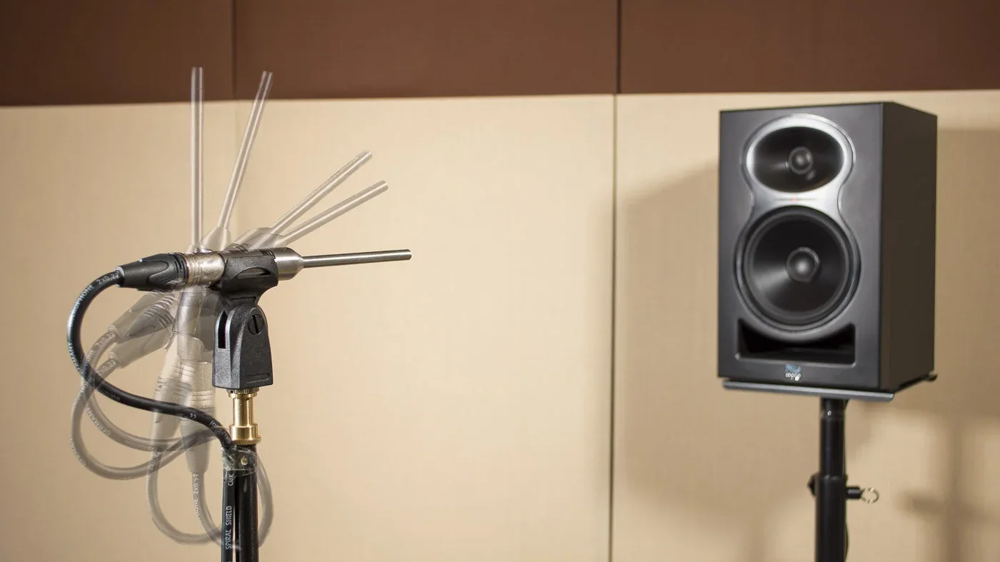
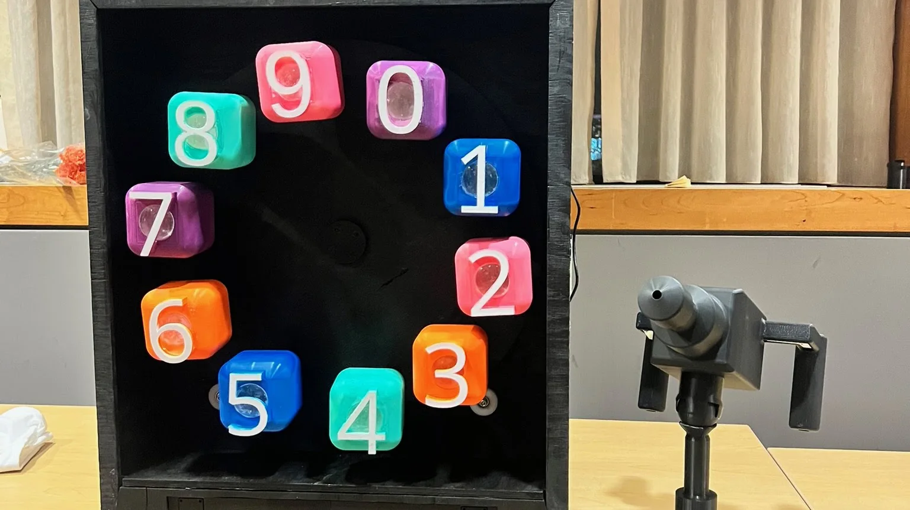
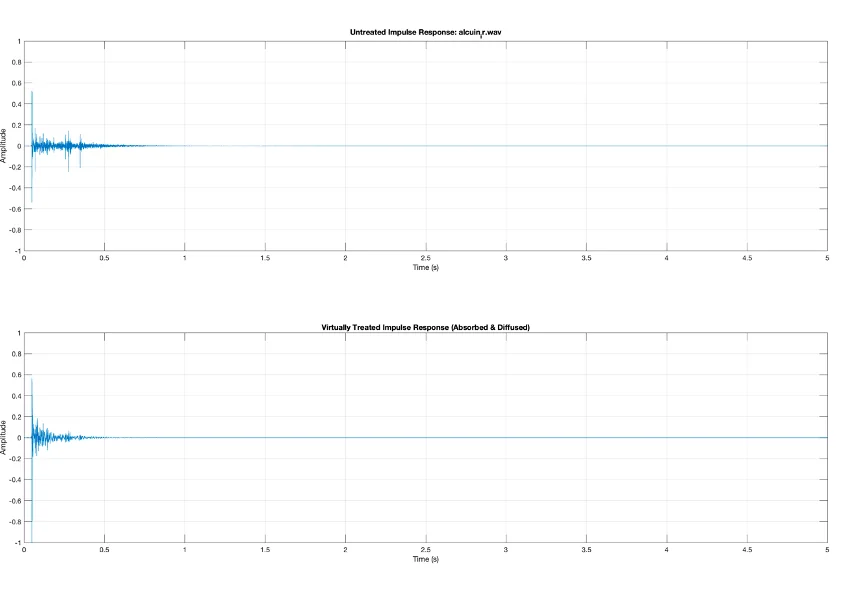
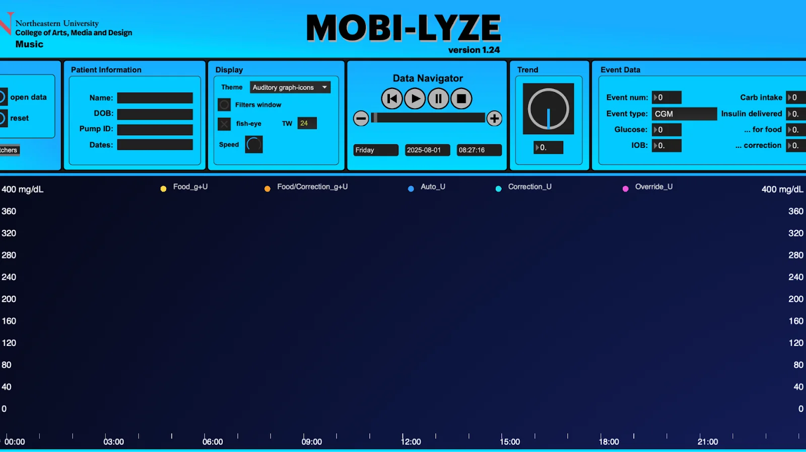
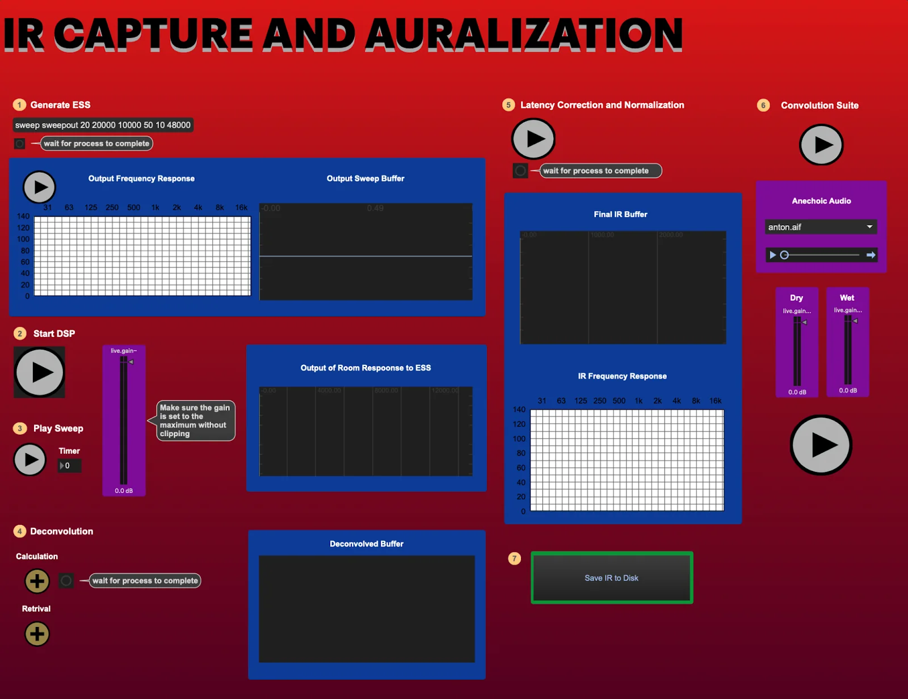
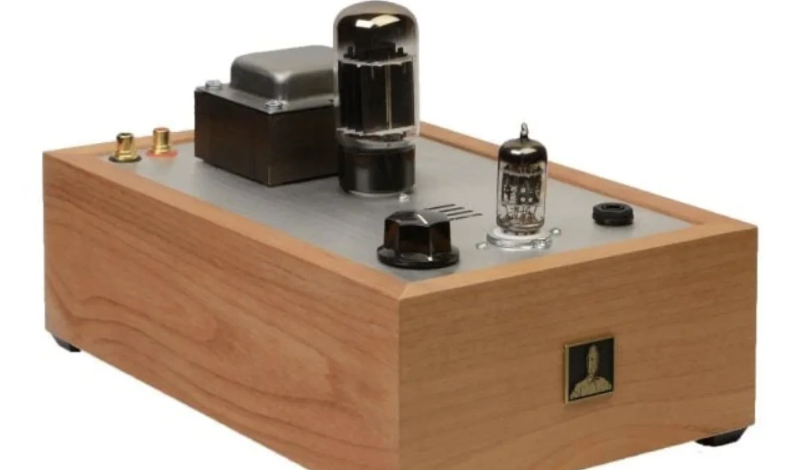
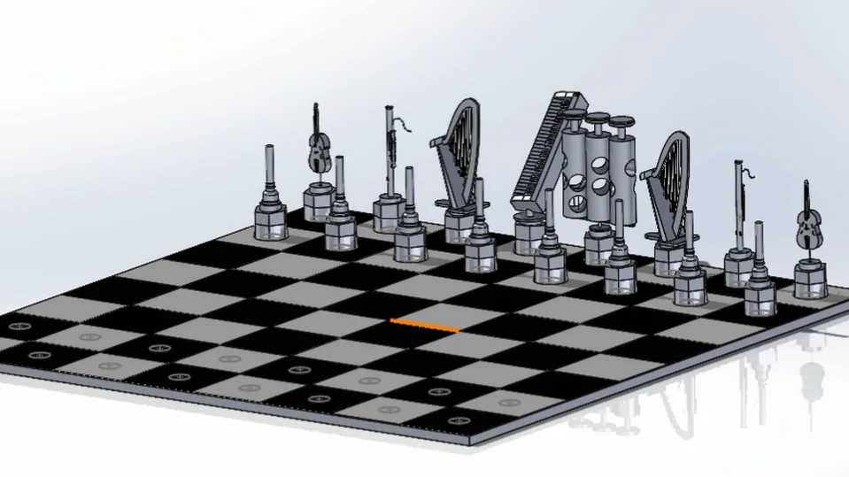

Nate Lee
Engineer and Musician
Hi, I'm Nate Lee, a Junior studying Electrical Engineering and Music Technology at Northeastern University. I am passionate about the intersection of DSP, Acoustics, and Music.
Incoming Audio Systems Engineering Co-op at Sonos · Jan 2027

My Work

LaserFocus
Aim a laser at the right answer on a spinning number wheel. Wired the electronics with the EE team, helped build the Arduino game firmware, and designed the front enclosure in OnShape.
Arduino, Embedded C++, OnShape, Systems Integration
DSP Acoustic Remediation Tool
A three-stage MATLAB pipeline that modifies a measured impulse response to simulate absorption panels and diffusers, then renders before/after auralizations.
MATLAB, MaxMSP, DSP, ISO 3382
Mobi-lyze: The Vocal Tract
Turning glucose and insulin data into sound for endocrinology reviews, in partnership with Mass General Hospital. I built the Vocal Tract theme, a formant synthesizer that maps glucose to vowels.
MaxMSP, Formant Synthesis, Sonification
Acoustic Measurement & Auralization Toolkit
Exponential sine sweep capture and deconvolution in Max, ISO 3382 analysis (RT60, C50) in MATLAB, and real-time convolution auralization.
MaxMSP, MATLAB, Acoustic Measurement
Headphone Tube Amplifier
A Bottlehead output-transformerless amp built from the power supply up, verified node by node, and paired with Sennheiser HD 650s.
Analog Audio, Vacuum Tubes, SolderingProduct photo: Bottlehead
SolidWorks Orchestral Chessboard
Six instrument-inspired pieces, a full board assembly, exploded views, and dimensioned drawings, all modeled in SolidWorks.
SolidWorks, CADExperience
- Jan 2027 – Jun 2027
Audio Systems Engineering Co-opIncoming
Sonos · Boston, MA
- Jun 2026 – Aug 2026
Acoustics, Noise & Vibration Intern
AKRF · New York, NY
- Acoustical consulting across environmental noise and vibration, acoustic modeling (Treble, CadnaA), impulse response diagnostics, and listening-room calibration.
- Contributed to 30+ client projects and 15+ site visits.
- Jun 2026 – Aug 2026
Assistant Studio Engineer
Studio 6M · Midtown Manhattan
- Full-service podcast and content production studio.
- Managed end-to-end session setup, including multi-camera, audio, and lighting rigs, plus client consultation and real-time adjustments during recording.
- Jan 2026 – Apr 2026
Research Assistant & Sound Designer
Northeastern Sonification Lab
- Developed Mobi-lyze, a medical sonification system in MaxMSP in partnership with Mass General Hospital, translating CGM and insulin pump data into auditory displays for endocrinology reviews.
- Built “The Vocal Tract”, a formant synthesis engine mapping glycemic deviation to vowel morphing (“Ah” ↔ “Ee”) using 5 parallel biquad filters and Peterson & Barney (1952) formant data.
- Jan 2026 – Apr 2026
Hardware Product Lab Engineer
Forge Product Development Lab, Northeastern
- Built LaserFocus, an arcade game for youth STEM education, as part of an 8-person interdisciplinary team.
- Integrated and wired all electrical components to an Arduino Mega: stepper motor, I2C LCD, MP3 module, buttons, buzzer, and a multiplexer routing signals from 10 photoresistor-based number blocks.
- Sep 2025 – Jan 2026
Audio & Video Editing Intern
Sound Impact
- Edited and produced weekly videos in DaVinci Resolve and Audacity to support Sound Impact's music programs.
- Edited and mixed voice-over recordings for the organization's final soirée showcase video, balancing multiple tracks into a polished deliverable.
- Jul 2024 – Aug 2025
Tennis Coach
Nike Tennis Camps · Berkeley, CA
- Instructed campers ages 8–18 in daily tennis training sessions.
- Led skill-building drills, gave live demonstrations, and tailored instruction to individual needs.